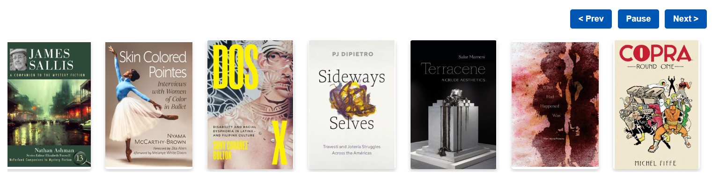

New Books Display
A responsive digital book display for showcasing new library acquisitions. The interactive carousel presents book covers and bibliographic information and provides controls for navigating or pausing the display.

Accessible web design for library discovery
A collection of responsive digital book display experiments and reusable interface patterns for libraries. Each project focuses on clear presentation, accessibility, and lightweight front-end code.
Selected work
A responsive digital book display for showcasing new library acquisitions. The interactive carousel presents book covers and bibliographic information and provides controls for navigating or pausing the display.

About this collection
These projects use semantic HTML, responsive CSS, visible keyboard focus, sufficient color contrast, and minimal JavaScript. The same visual system can be reused across individual GitHub Pages projects so they feel like parts of one site.